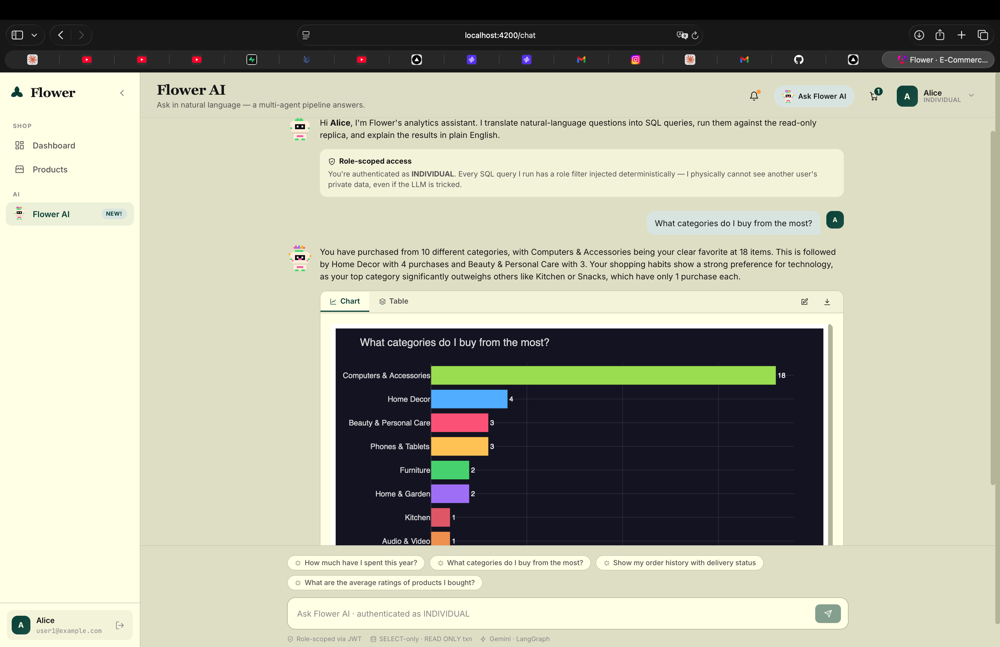
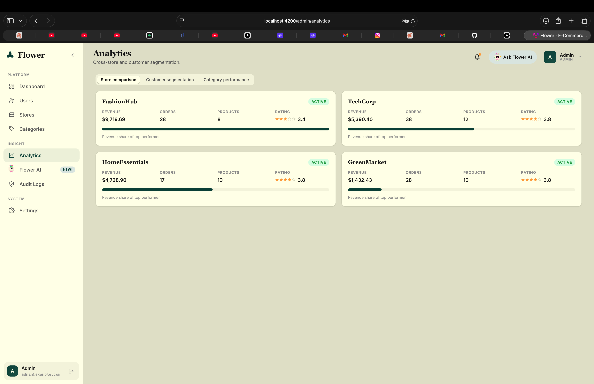
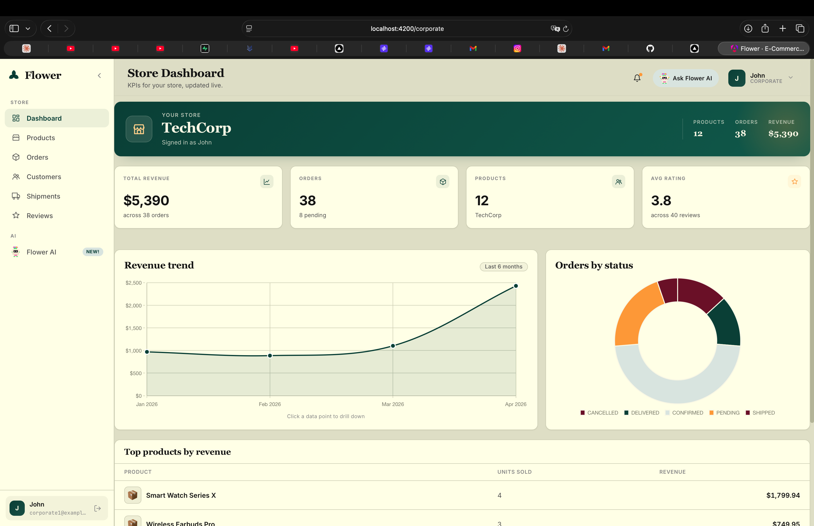
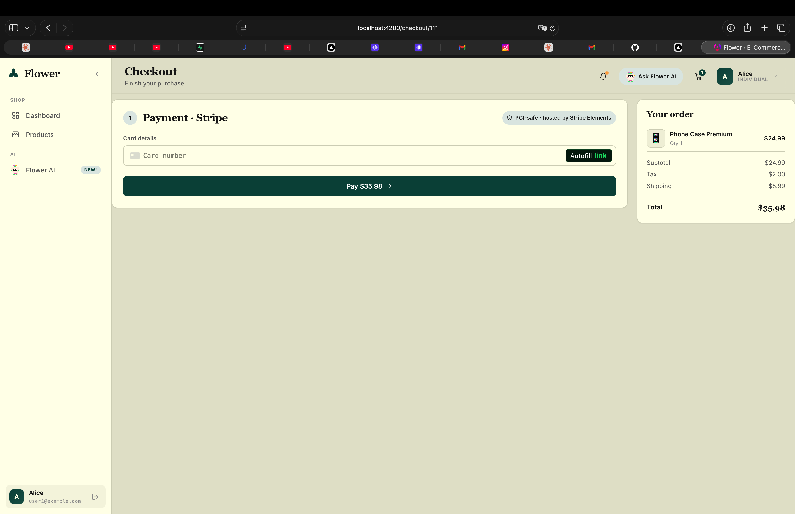
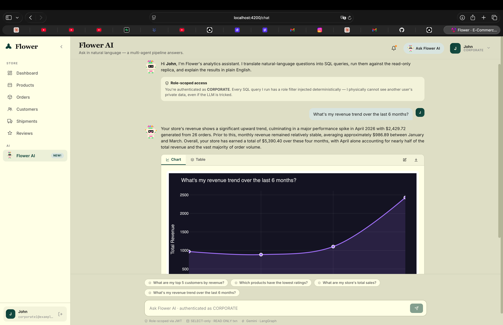

The Flower E-Commerce Analytics Platform is a production-grade, three-tier web application that combines a relational e-commerce backend with a natural-language analytics assistant. The system serves three role-segregated audiences — Admin, Corporate, and Individual users — across a Stripe-backed checkout pipeline, a corporate KPI dashboard, an admin governance console, and a chatbot that converts plain-English questions into role-scoped SQL queries against the live database.
The chatbot is implemented as a six-agent LangGraph state machine (Guardrails → SQL Generator → Executor → Error Handler → Analyst → Visualizer) and enforces role-based query scoping through deterministic SQL filters rather than relying on the LLM's compliance. The design directly addresses the twelve attack vectors documented in the CSE 214 Security Penetration Test Cases catalogue, including prompt-injection, cross-corporate access, SQL-injection through the natural-language interface, JWT tampering, and stored XSS via review propagation.
The codebase consists of a Spring Boot 3 backend (Java 17), an Angular 21 frontend with the Flower design
system, and a Python 3.11 chatbot service. Deployment is provided through Dockerfiles for each service plus
a one-command docker compose up stack, with reference Kubernetes manifests included. Continuous
integration runs on every push via GitHub Actions, executing 62 backend tests, 38 frontend tests, and the full
chatbot pytest suite (35+ regression tests for role isolation and security).
./mvnw test — 62 / 62 ✓ ·
frontend npx vitest run — 38 / 38 ✓ ·
chatbot pytest -q — full suite ✓ ·
GitHub Actions CI run on commit 504e3c5 — success
| Layer | Choice | Justification |
|---|---|---|
| Backend | Spring Boot 3.2 (Java 17) | Mature ecosystem, first-class JPA/Hibernate, declarative security, OpenAPI auto-generation. |
| Frontend | Angular 21 (standalone components, signals) | Strict typing, lazy-loaded routes, native template safety against XSS, Chart.js interop. |
| Database | PostgreSQL 16 (H2 fallback) | Strong relational guarantees, window functions for analytics, easy local demo with H2. |
| AI Chatbot | Python 3.11 + FastAPI + LangGraph | State-machine orchestration of agents; explicit, debuggable workflow versus prompt-chained agents. |
| LLM | Google Gemini (via OpenAI-compatible client) | Cost-effective for SQL generation; deterministic templates handle the bulk of queries without LLM dependency. |
| Visualization | Chart.js (frontend) + Plotly (chatbot) | Lightweight client-side rendering; Plotly HTML rendered inside a sandboxed iframe. |
| Payments | Stripe (backend SDK + Elements) | PCI-safe card collection; secret key kept server-side, only publishable key exposed to the browser. |
| Auth | JWT HS512 + BCrypt + HttpOnly cookies | Stateless, signature-verified, with cookie storage to remove access-token-in-localStorage XSS risk. |
The platform is decomposed into four cooperating services, each owning a clear responsibility and surface:
Splitting the chatbot into a dedicated FastAPI process — rather than embedding LangGraph inside Spring Boot — yields three concrete benefits:
CHATBOT_API_KEY — the chatbot literally cannot perform writes.
Every authenticated request carries an HS512-signed JWT containing the server-issued role. Authorization is layered:
(i) a Spring Security filter rejects unsigned or tampered tokens; (ii) route-level hasAuthority(...) rules
on SecurityConfig; (iii) service-level ownership checks (e.g. order.user_id == sessionUserId);
and (iv) at the chatbot layer, deterministic SQL filters rewrite WHERE clauses to enforce the same scope —
even if the LLM generated something broader.
The schema is normalized to 3NF with one deliberate denormalization (customer_profiles.total_spend),
documented in DataSeeder.java. Every mutating entity carries created_at and
updated_at audit timestamps populated through JPA @PrePersist / @PreUpdate
lifecycle callbacks.
backend/src/main/java/com/demo/ecommerce/entity/.| Table | Index | Use Case |
|---|---|---|
orders | (user_id, order_date) | Individual dashboard / "my orders" listing |
orders | (store_id, order_date) | Corporate sales-over-time KPIs |
orders | (status) | Admin pipeline view; chatbot status filters |
products | (store_id), (category_id), (sku) | Catalog browsing + analytics drill-down |
reviews | (product_id), (star_rating), (sentiment) | Product page aggregation; sentiment dashboards |
CHECK (stock >= 0) on productsCHECK (star_rating BETWEEN 1 AND 5) on reviewsCHECK (grand_total >= 0) on ordersCHECK (cost_price IS NULL OR cost_price >= 0) on productsCascadeType.ALL + orphanRemoval.
All transactional entities (User, Store, Category, Product, Order, Shipment, Review, CustomerProfile) carry
created_at and updated_at timestamps. The audit_logs table records
administrator actions: every endpoint in AdminController that mutates user state, store status,
category taxonomy, or platform settings is wrapped with an auditLogService.log(...) call.
The platform unifies six Kaggle e-commerce datasets into a single normalized schema. The mapping is documented in
docs/ETL_FIELD_MAPPING.md and implemented in DataSeeder.java as a deterministic, reproducible
seeder rather than a one-off CSV import. This guarantees the demo dataset is identical on every fresh boot.
| Source dataset | Key fields | Target entities |
|---|---|---|
| UCI Online Retail | InvoiceNo, StockCode, Quantity, UnitPrice, Country | Orders, OrderItems, Products |
| E-Commerce Customer Behavior | CustomerID, Gender, Age, City, MembershipType, TotalSpend | Users, CustomerProfiles |
| E-Commerce Shipping Data | WarehouseBlock, ModeOfShipment, CostOfProduct | Shipments, Products (cost_price) |
| Amazon Sales | OrderID, Status, Fulfilment, SalesChannel, SKU, Category | Orders (status, fulfilment), Categories |
| Pakistan E-Commerce Orders | ItemID, Status, Price, GrandTotal, PaymentMethod | Orders (payment_method), OrderItems |
| Amazon US Customer Reviews | ProductID, StarRating, HelpfulVotes, TotalVotes | Reviews, Sentiment |
ETL_FIELD_MAPPING.md.BIGINT primary keys via Hibernate GenerationType.IDENTITY.java.time.LocalDateTime in ISO-8601 format.DECIMAL(12,2) with non-negative CHECK constraints; cost-price stored separately for margin analytics.POSITIVE / NEUTRAL / NEGATIVE at seed time.Per the instructor's clarification, the platform is not required to ingest the original Kaggle CSVs at runtime — it only needs a schema and dataset that can answer the demo questions (top-reviewed product, monthly revenue, customer segmentation, etc.). The seeder produces a self-consistent corpus that satisfies every demo prompt while remaining fully deterministic.
The backend exposes 13 controllers with conventional REST resource paths. Every endpoint is documented through
Springdoc OpenAPI 2.3 and reachable at /swagger-ui.html at runtime.
| Method | Endpoint | Auth | Purpose |
|---|---|---|---|
| POST | /api/auth/register | — | Create individual user |
| POST | /api/auth/login | — | Issue access + refresh JWTs (HttpOnly cookies) |
| POST | /api/auth/refresh | — | Exchange refresh for new access token |
| GET | /api/products | any | Paginated, searchable, filterable catalogue |
| POST | /api/cart/items | INDIVIDUAL | Add product to cart |
| POST | /api/orders | INDIVIDUAL | Place order from cart |
| POST | /api/payments/create-intent | INDIVIDUAL | Create Stripe PaymentIntent |
| POST | /api/payments/confirm | INDIVIDUAL | Confirm payment, mark order CONFIRMED |
| PATCH | /api/orders/my/{id}/cancel | INDIVIDUAL | Cancel a pending order (state-guarded) |
| PATCH | /api/orders/my/{id}/return | INDIVIDUAL | Return delivered order & refund |
| POST | /api/reviews | INDIVIDUAL | Post product review (HTML-escaped) |
| GET | /api/store/my/* | CORPORATE | Store, products, orders, reviews, shipments |
| GET | /api/admin/* | ADMIN | Users, stores, categories, analytics, audit, settings |
| POST | /api/chat/ask | any | Proxied chatbot endpoint (server-to-server auth) |
Successful responses return the resource DTO directly. Errors flow through GlobalExceptionHandler, which
translates domain exceptions to safe HTTP responses without leaking stack traces or SQL fragments:
ResourceNotFoundException → 404 BadRequestException → 400 UnauthorizedOperationException → 403 AuthenticationException → 401 MethodArgumentNotValidException → 400 with field-level messages
All write endpoints accept dedicated DTOs annotated with Jakarta Bean Validation: @NotBlank,
@Email, @Size, @Min, @Pattern. The custom
InputValidator applies regex blocklists for prompt-injection / SQL-injection patterns before any
natural-language input reaches the chatbot proxy.
List endpoints accept page, size, sort, search, and
domain-specific filters (e.g. categoryId, status). Spring Data JPA's Pageable
abstraction is used uniformly, returning Page<T> with totals and metadata.
The chatbot is a deterministic state machine — not a free-form agent loop — orchestrated through LangGraph. Each node has a single responsibility, a well-defined input/output, and an explicit transition policy. The role context is injected once at request entry from the authenticated session and re-asserted in every subsequent SQL generation pass; the LLM never controls scoping.
MAX_RETRIES = 3.| Agent | Role | Highlights |
|---|---|---|
| Guardrails | Scope & safety | Detects prompt injection, cross-user / third-person enumeration, greeting/out-of-scope intents. |
| SQL Generator | NL → SQL | ~23 deterministic templates first; LLM fallback only for unmatched questions; role-scoped WHERE clauses are appended programmatically. |
| Executor | Safe SQL execution | SQLAlchemy text(); SELECT/WITH only; UNION, multi-statements, DDL, DML rejected; SET TRANSACTION READ ONLY. |
| Error Handler | Recovery | Bounded retries with corrective hints fed back into SQL Generator. |
| Analyst | Result narration | Pandas-driven summary with optional LLM polish; deterministic when API key absent. |
| Visualizer | Plotly chart code | AST validator blocks imports, dunders, eval, exec; rendered inside a sandboxed iframe. |
Role enforcement is applied at three layers, on every request:
userId, role, and (for corporate) storeId to the request body, server-to-server, with the shared CHATBOT_API_KEY header.user_id = ?, for CORPORATE forces store_id IN (?), ADMIN unrestricted but logged.password_hash, api_key, internal_cost).
LEFT JOIN shipments query scoped to the authenticated user.The platform is hardened against the twelve attack vectors documented in the CSE 214 — Security Penetration Test Cases catalogue. Each control is implemented in production code with a corresponding regression test.
| AV | Vector | Severity | Status | Defence (file:line) |
|---|---|---|---|---|
| AV-01 | Role override via prompt injection | CRITICAL | Pass | Role from JWT, not prompt — main.py + InputValidator.java |
| AV-02 | Cross-corporate data access | CRITICAL | Pass | Forced store_id WHERE — sql_generator.py:184 |
| AV-03 | SQL injection via NL interface | CRITICAL | Pass | SELECT-only + UNION/multi-stmt blocked — database.py:156-226 |
| AV-04 | Stored XSS via review + chatbot | HIGH | Pass | Backend HTML-escape on submit + Angular interpolation — ReviewService.java:71 |
| AV-05 | Individual BOLA / horizontal escalation | HIGH | Pass | Ownership guards + name-based query blocker — guardrails.py + OrderService.java:91 |
| AV-06 | JWT role tampering | CRITICAL | Pass | HS512 signature verify + 64-char min secret fail-fast — JwtUtil.java:30 |
| AV-07 | System prompt leakage | MEDIUM | Pass | Guardrails refuses introspection prompts — guardrails.py |
| AV-08 | Visualization code injection | HIGH | Pass | AST validator + sandbox iframe — visualizer.py:18 + chatbot.ts:325 |
| AV-09 | Object enumeration | MEDIUM | Pass | Progressive-ID detection + per-IP rate limit — main.py |
| AV-10 | Conversation context poisoning | HIGH | Pass | Role re-asserted server-side every turn — main.py:124 |
| AV-11 | Mass assignment via AI write | HIGH | Pass | Chatbot is SELECT-only by design — database.py:156 |
| AV-12 | SELECT * exfiltration | MEDIUM | Pass | Sensitive-column denylist + per-table allowlist — database.py:209 |
JWT_SECRET required to be ≥ 64 characters; application fails on startup otherwise.docker-compose.yml uses ${JWT_SECRET:?...} to refuse to start without an explicit secret.| Surface | Framework | Tests | Status |
|---|---|---|---|
| Backend (Java) | JUnit 5 + Mockito + Spring Boot Test | 62 | All green |
| Frontend (Angular) | Vitest + JSDOM | 38 | All green |
| Chatbot (Python) | pytest | full suite + 35 data-leakage regressions | All green |
Backend coverage is reported through the JaCoCo Maven plugin; running ./mvnw verify produces an HTML
report at backend/target/site/jacoco/index.html and the GitHub Actions workflow uploads it as a build
artefact for every push.
The GitHub Actions workflow at .github/workflows/ci.yml runs four parallel jobs on every push and pull
request to main:
npm ci → npm run build → npx vitest run.ruff check → full pytest suite.
The latest CI run on commit 504e3c5 finished with status success.
.editorconfig for indentation and line-ending consistency.pyproject.toml Ruff configuration with E,W,F,I,B,UP rule sets.feat:, fix:, chore:, docs:).
The simplest path from clone to running platform is docker compose up --build. The compose file
orchestrates four containers — Postgres, Spring Boot, FastAPI chatbot, and Nginx-served Angular bundle —
with health-check-based dependency ordering and explicit, env-driven secrets.
$ cp .env.example .env # fill JWT_SECRET, STRIPE_*, AI_API_KEY $ docker compose up --build # ~3 min on first run, ~30s on subsequent $ open http://localhost # Angular served by Nginx
The k8s/ directory contains production-style manifests:
postgres.yaml — StatefulSet with PVC, headless Service, readiness probe.backend.yaml — Deployment (2 replicas), Service, Secret references, readiness probe, resource limits.chatbot.yaml — Deployment, Service, secret-derived DATABASE_URL, health probe.frontend.yaml — Nginx Deployment with rolling update strategy.ingress.yaml — path-based routing: /api → backend, /chat → chatbot, / → frontend.| Variable | Service | Notes |
|---|---|---|
JWT_SECRET | Backend | ≥ 64 chars; app fails startup otherwise |
STRIPE_SECRET_KEY | Backend | Only on the server; never sent to the browser |
STRIPE_PUBLISHABLE_KEY | Backend → Frontend | Returned to client at checkout init |
AI_API_KEY | Backend / Chatbot | Gemini key, server-side only |
CHATBOT_API_KEY | Backend ↔ Chatbot | Shared secret for server-to-server proxy |
DB_URL / DB_USERNAME / DB_PASSWORD | Backend | Postgres in production, H2 by default |
DATABASE_URL | Chatbot | SELECT-only role recommended |
Challenge: a free-form agent loop is hard to test, hard to debug, and unpredictable under adversarial prompts. Solution: the chatbot is implemented as a deterministic LangGraph state machine where each node is unit-testable in isolation. The bulk of demo prompts are answered by ~23 deterministic SQL templates; the LLM is a fallback for unmatched questions, never a controller of scope.
Challenge: a corporate user could ask "show all stores' revenue" and the LLM might comply.
Solution: WHERE clauses for ownership are appended programmatically by sql_generator.py
after the LLM (or template) produces a query. The Guardrails agent additionally detects third-person enumeration
("how much has Bob spent") and refuses before reaching SQL.
Challenge: storing access tokens in localStorage exposes them to XSS exfiltration;
relying solely on cookies breaks Postman / curl flows. Solution: the backend issues HttpOnly
SameSite=Strict cookies and accepts the same token in an Authorization: Bearer header. Tests were
updated to read JWT from cookie metadata via MockMvc.
Challenge: rendering LLM-produced visualization code without enabling client-side script execution.
Solution: the Visualizer agent emits Python code, runs it through an AST validator (no
import, no dunders, no eval/exec), executes it in a restricted-builtins sandbox to
produce static Plotly HTML, and the Angular frontend renders that HTML inside a sandboxed iframe. The frontend
never calls eval or Function().
Challenge: a subset of chatbot regression tests originally required a live Postgres instance, which made CI brittle. Solution: those tests were rewritten to use an isolated SQLite fixture seeded with a minimal schema. The full pytest suite now runs in CI without external services and the role-scoped security regression tests run on every push.
Challenge: early in development, prompts like "how much have I spent this year?" produced
LLM-generated SQL that occasionally truncated date filters or misnamed columns. Solution: these
high-frequency prompts now have dedicated deterministic builders in sql_generator.py: time windows
derive from DATE_TRUNC('year', CURRENT_DATE), the user scope is hard-coded, and cancelled orders are
excluded by default.
| Role | Password | |
|---|---|---|
| Admin | admin@example.com | 123 |
| Corporate | corporate1@example.com … corporate4@example.com | 123 |
| Individual | user1@example.com … user20@example.com | 123 |
README.md — quick start, endpoints, environment referencedocs/architecture/system-architecture.md — full system diagram & flowsdocs/architecture/er-diagram.md — full ER modeldocs/ETL_FIELD_MAPPING.md — six-dataset to schema mappingdocs/grading-self-assessment.md — rubric self-evaluation with file:line evidencedocs/DELIVERY_NOTES.md — verification commands & CI statusdocs/screenshots/ — captured demo flows



End of Technical Report · Flower E-Commerce Analytics Platform · April 2026